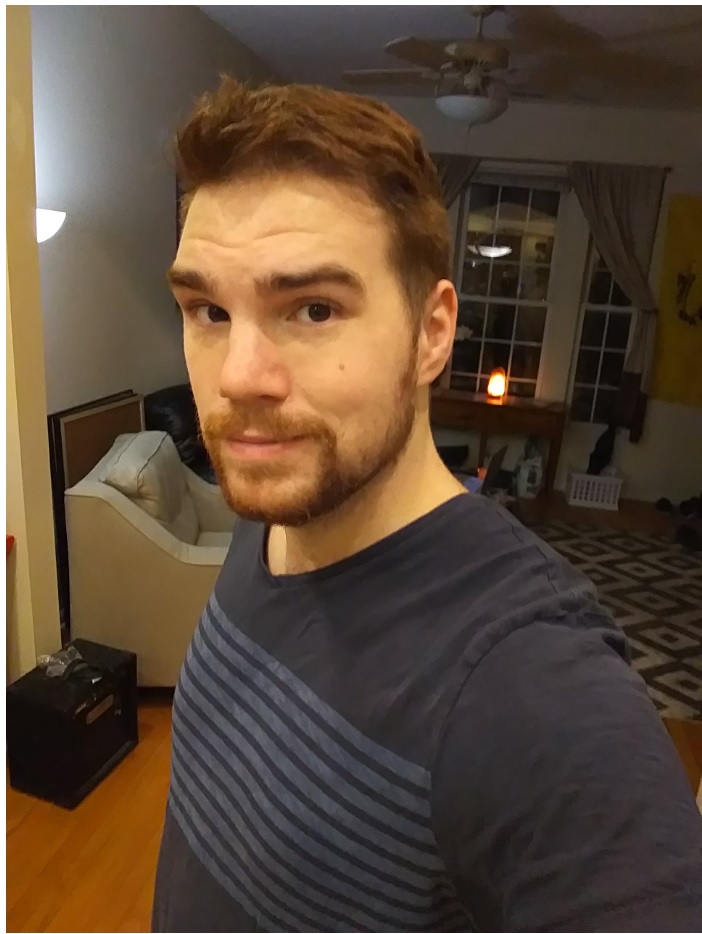

About Me

I was born right outside of Philadelphia. I grew up having fun building lego sets and model trains with my grandpa. I enjoyed the out doors and eventually when I was 10 I joined the 4-H club. For those who don't know the 4-H club is an agricultural club, which was started in the early 1900's to promote agricultural interest in young americans, similar to the boy scouts. I enjoyed raising pigs for a number of years until I was old enough to start an actual job. Throughout highschool and college I was always intested in technology. In highschool I was a part of FIRST Robotics, where you students built and developed robots for various challenges and competitions. In college I became the IT Director for the Council of Commonwealth Student Governements and managed the front-end development of their website.
Currently I am enjoying life living in Chicago. I am attending Northwestern and Trilogy Eduction's Software Engineering Bootcamp where I am further developing my skills as a developer. I hope to use these skills to build and modify websites, while working in a fulfilling career.